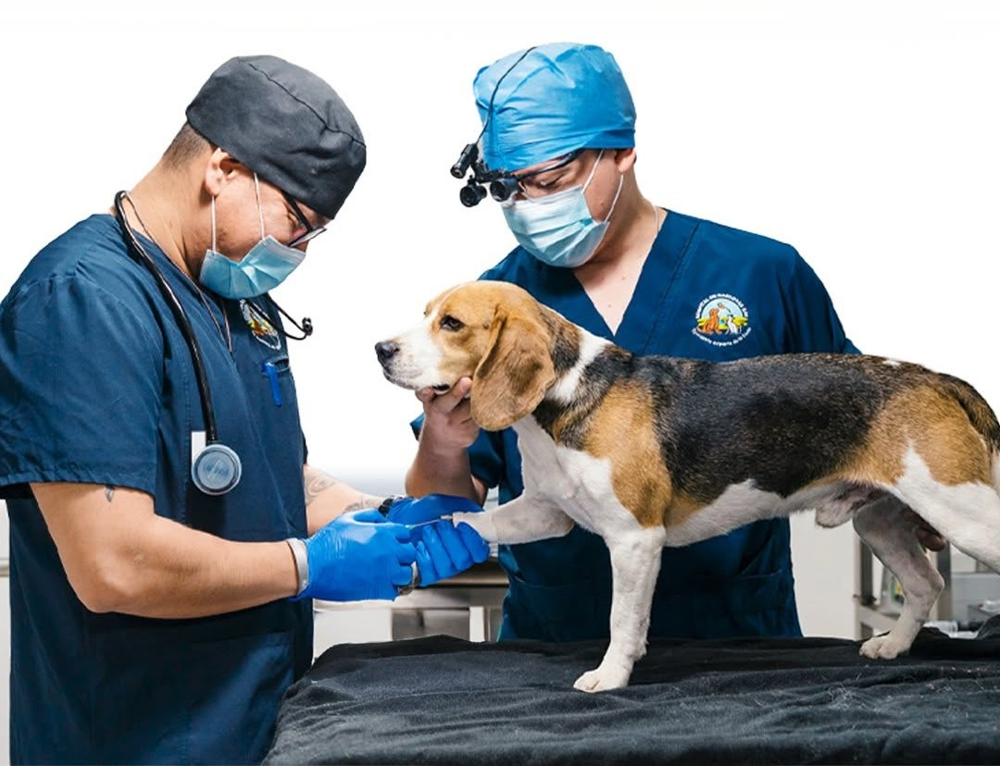
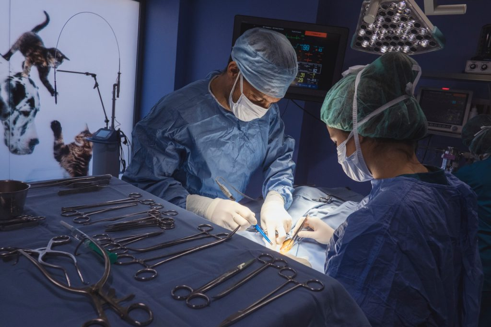
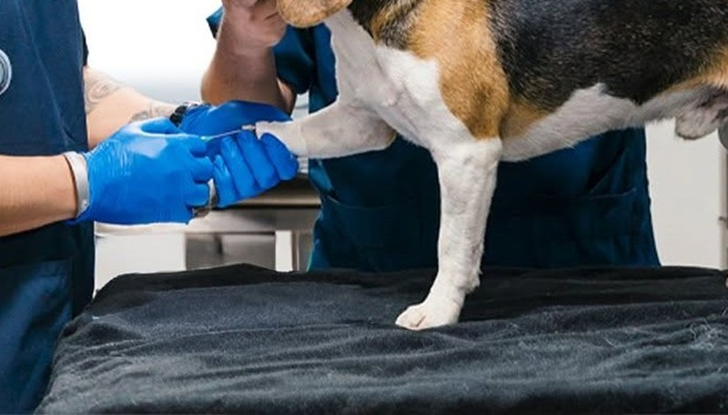
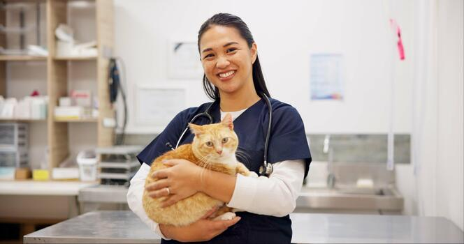

Consultas y Medicina Preventiva

Realizamos chequeos generales, plan de vacunación, desparasitación y asesoría nutricional. Prevenir es la clave para mantener a tu engreído sano y feliz en cada etapa de su vida.

Realizamos chequeos generales, plan de vacunación, desparasitación y asesoría nutricional. Prevenir es la clave para mantener a tu engreído sano y feliz en cada etapa de su vida.

Contamos con un quirófano moderno para cirugías de tejidos blandos, esterilizaciones, profilaxis dental y atención de emergencias bajo estrictos protocolos de seguridad y monitoreo.

Protegemos a tu mascota con esquemas de vacunación completos y desparasitación interna y externa, adaptados a su edad, especie y estilo de vida.

Atención especializada y muy delicada para gatos: controles de rutina, cuidado de la piel, del pelaje y seguimiento de su salud en un ambiente tranquilo.
Análisis de sangre, orina y heces con resultados rápidos y confiables, que nos ayudan a llegar a diagnósticos certeros y tratamientos oportunos.
Equipos de ecografía para evaluar órganos internos de forma segura, sin dolor y sin dañar a tu engreído, con evaluación inmediata de nuestro equipo.